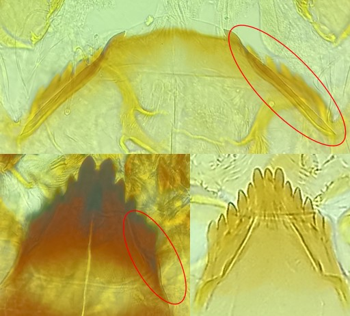
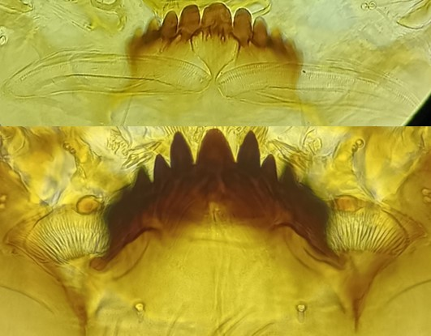

Clé de détermination des diptères Chironomidae
Clef d’identification des sous-familles et tribus


Plaques ventromentales non striées
Parfois peu visibles et/ou peu développées
Plaques ventromentales striées et bien visibles
(en « éventail » ou « bâtonnet »)